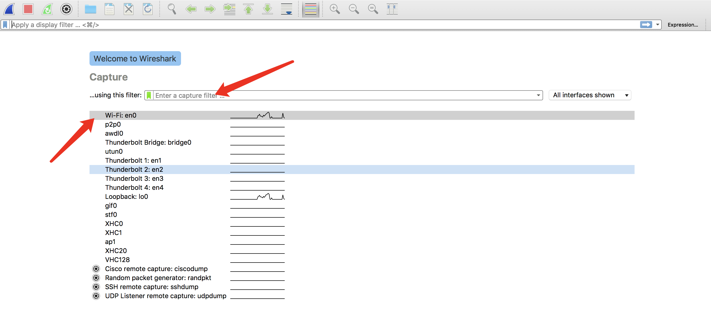
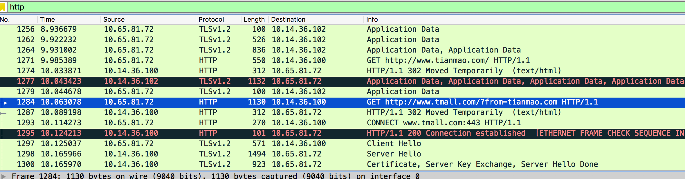
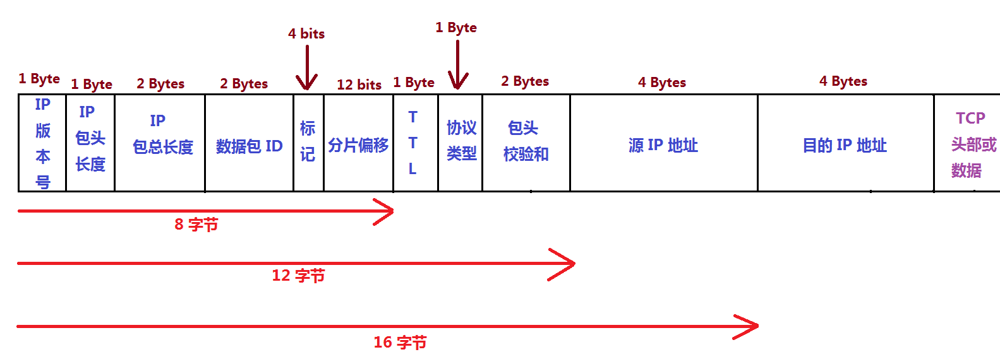
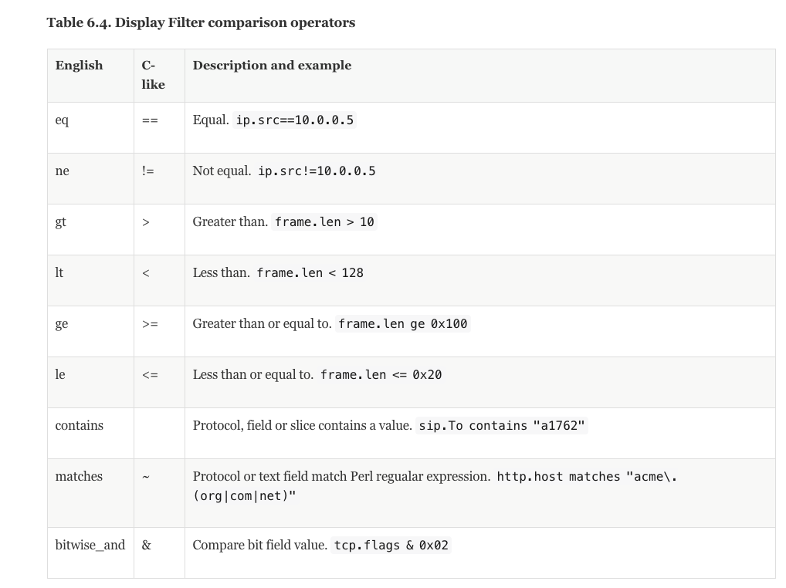
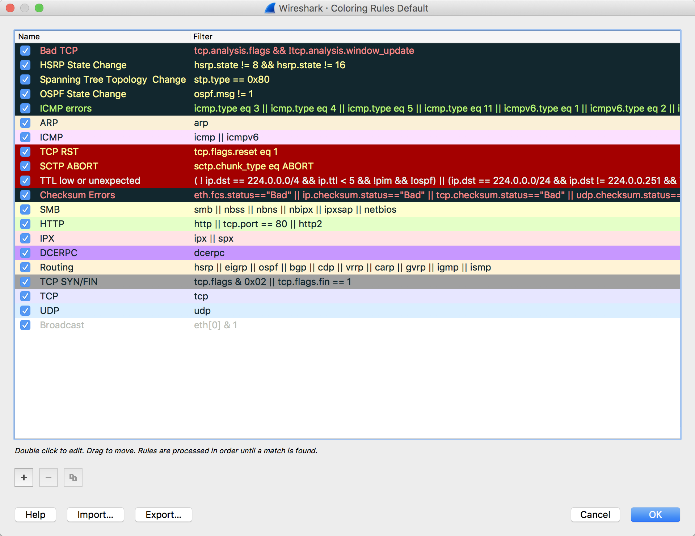
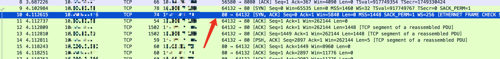
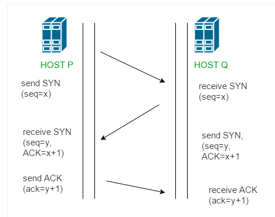
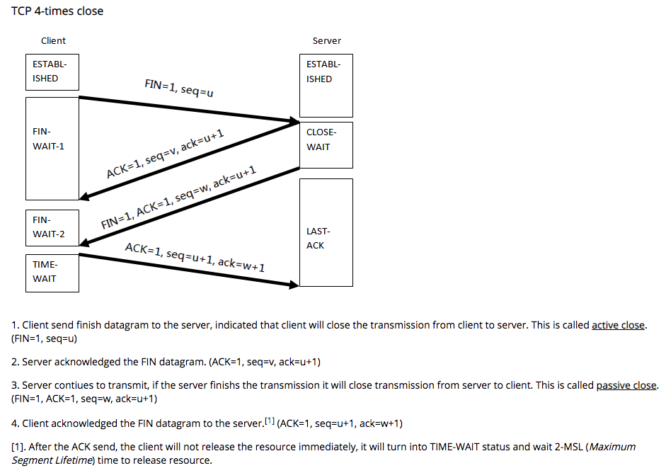

[TOC]
wireshark
捕获

这一步设置捕获, 设置捕获过滤, 选择网卡
捕获过滤器与显示过滤器不同. 捕获过滤器来过滤需要捕获的请求, 只有符合条件的请求才会被捕获. 显示过滤器用来筛选在列表中显示的请求.
例子
Capture only traffic to or from IP address 172.18.5.4:
host 172.18.5.4
Capture traffic to or from a range of IP addresses:
net 192.168.0.0/24
or
net 192.168.0.0 mask 255.255.255.0
Capture traffic from a range of IP addresses:
src net 192.168.0.0/24
or
src net 192.168.0.0 mask 255.255.255.0
Capture traffic to a range of IP addresses:
dst net 192.168.0.0/24
display filters
表达式规则
- 协议过滤
比如TCP，只显示TCP协议。 http 只显示 http 请求

- IP 过滤
比如 ip.src ==192.168.1.102 显示源地址为192.168.1.102，
ip.dst==192.168.1.102, 目标地址为192.168.1.102
- 端口过滤
tcp.port == 80, 端口为80的
tcp.srcport == 80, 只显示TCP协议的原端口为80的。
- Http模式过滤
http.request.method=="GET", 只显示HTTP GET方法的。 http.request.uri contains "github.com" // 过滤 uri 中包含github.com的请求
- 逻辑运算符为 AND/ OR
过滤网段 192.168.1.0 中的数据包
net 192.168.1.0/24
表达式
ip[8:1]==1
含义为仅显示 IP 从分组头部的第八个字节开始（8），长度为1字节（1），其“值”为 10进制1 的数据包
查看相关 RFC 文档对 IP 分组头部结构的定义，其第九个字节为 TTL（Time To Live），这将会显示所有 IP 分组头部的 TTL=1 的数据包。
下图为 IP 分组头部结构，wireshark 的“中括号内数字加冒号”的表达式正是利用了这种结构中，“结构成员”的字节偏移（第N字节）与“结构成员”的长度：

可以用的操作符
参考官方文档

请求颜色标识
进行到这里已经看到报文以绿色，蓝色，黑色显示出来。Wireshark通过颜色让各种流量的报文一目了然。比如默认绿色是TCP报文，深蓝色是DNS，浅蓝是UDP，黑色标识出有问题的TCP报文——比如乱序报文。

观察 TCP 的三次握手
过滤握手链接
在 wireshark 的 Edit -> Find Packet 输入 tcp.flags 过滤后可以筛选 TCP 请求 查看具体的 flag: tcp.flags.syn == 1 点击find之后Trace 种的第一个 SYN 报文会亮

TCP 协议中的几个信号
- CWR - Congestion Window Reduced
- ECE - Explicit Congestion Notification echo
- URG - Urgent
- ACK - Acknowledgement
- PSH - Push
- RST - Reset
- SYN - Synchronize (Synchronize Sequence Number)
- FIN - Finished

四次挥手关闭连接

参考资料: